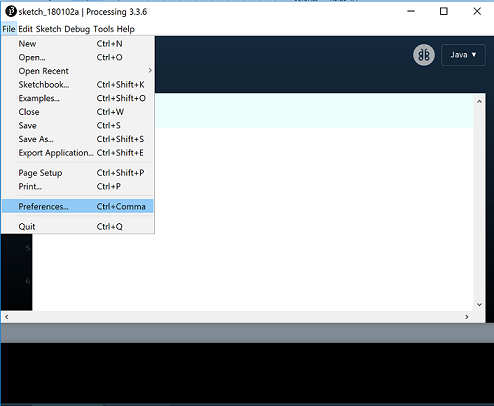
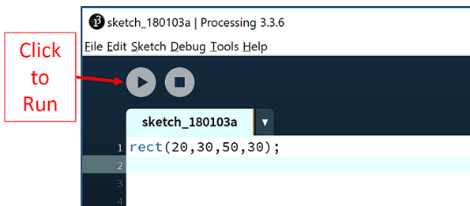
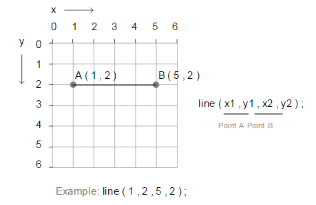
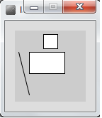
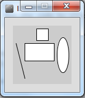
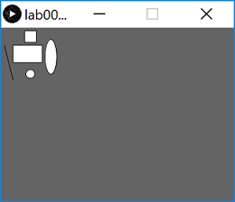

Lab-01
Labs
Objectives
Processing · downloading· basics
Lab advice
Your labs are not a race to be the first student finished.
It is very important that you:
- take your time.
- read the instructions carefully.
- ask your lecturer to explain concepts that you don't understand; that is what we are here for!
Where code is given in labs, resist the urge to cut and paste it; maximise your learning by typing the code in.
The more mistakes you make when working through these labs, the more you learn. If you reach the end of the lab and you haven't made any mistakes, a good learning exercise would be to try to produce syntax / logic errors and troubleshoot them.
Installing the PDE (Processing Development Environment)
- If you are using your own laptop and would like to install the PDE on it, please follow the instructions in this step.
- If you are using the WIT computers, you can ignore this step and move onto the next step.
Downloading the PDE
- The PDE can be downloaded from https://processing.org/. It is free, but you can choose to make a donation if you wish.
- Choose the version of the
- A zip file will start to download. When this file has downloaded, you will store this differently depending on your operating system.
Windows
- Decide where you are going to store your Programming applications on your computer. It is a good idea to create a folder called dev on your C: and store all your applications in there.
- Unzip the downloaded processing file to your chosen location. Note: if you don’t have unzipping software, 7-zip is a good choice and can be downloaded from here: http://www.7-zip.org/.
- You should now have a folder structure resembling this picture:

Mac
- Unzip the downloaded .zip file (by double-clicking on the zip file in the downloads folder)
- Drag the resulting folder to the Applications folder (on Mac, this holds all the applications). Note that it is useful/usual to have the Applications Folder in the 'Favourites' section in Finder.

- Your Applications folder should now contain the Processing application.
Opening the PDE (Processing Development Environment)
If you are using the College Computers…
Go to the search bar at the bottom row of the screen. Type in Processing. This should bring up the app for you. Double click on it to open the Processing app.
If you are using your own computer…
Go to the directory/folder where you installed your processing app.
Opening the PDE
Now that you have nagivated to where Processing is installed, you should see a list of files and folders similiar to the picture below:
(This is a screen shot using a MacBook - if you are using a labtop move the Processing file/icon to a similar folder e.g. dev if you have not already done so.)
Double click in the processing application (highlighted by the red rectangle).
The PDE (Processing Development Environment) should launch.
Setting your Sketchbook location
- As you work through the exercises in this lab, you will create many new files. These files are called Sketchbooks.
- It is important that you pick a convenient location on your computer to save these sketchbook files to. The following steps show you how to do this.
Updating your Sketchbook location
- If you don't have Processing open, launch it (see the previous step for the steps involved).
- From the File menu, select the Preferences menu item.

- The following window should appear.

- In the Sketchbook location, enter a location that is convenient to you. If you are using:
- the college computers, it could be your OneDrive or a USB drive (remember to back up your work if you are using a portable drive).
- your own laptop, choose a convenient location where you will store all your programming exercises.
- Click the OK button.
The Sketchbook location
- All your work can now be accessed easily by selecting the Sketchbook option from the File menu. An example of previous Sketchbook work could look like this:

Drawing Simple Shapes
- We will use the following built-in functions to draw simple shapes:
- rect()
- line()
- ellipse()
Drawing Rectangles
- The syntax of the rect function is:
rect(x, y, w, h)
x = x-coordinate of the upper left corner of the rectangle
y = y-coordinate of the upper left corner of the rectangle
w = width of the rectangle
h = height of the rectangle
- Note that, in computing, the coordinates start in the top left hand corner i.e. (0,0) is in the top left of the screen. In the following picture, you can see the coordinates of the rectangle (1,2) along with its width (4) and height (3).

- Enter the following code in your sketchbook:
rect(20,30,50,30);
- Run the code, by clicking on the play button (highlighted in red in the screen shot below):

- The following window should appear with a rectangle that:
- starts at the (x,y) coordinates (20,30) [measured in pixels]
- has a width of 50 pixels
- has a height of 30 pixels

Drawing Squares
Using the rect() function, you can draw squares. Just set the width and height to the same number of pixels.
Below the code you wrote previously, try drawing a square that has starts at the (x,y) coordinates of (40,5) and has a length of 20.
Run the code. Did a square appear?

Drawing Lines
- The syntax of the line function is:
line(x1, y1, x2, y2)
x1 = x-coordinate of first point
y1 = y-coordinate of first point
x2 = x-coordinate of second point
y2 = y-coordinate of second point
- In the following picture, you can see an example of a line.

- Enter the following code in your open sketchbook:
line(5,30,20,90);
- When you run the code, you should see the following line that starts at (5,30) and ends at (20,90):

Drawing Simple Shapes(contd.)
Drawing Ellipses
For our purposes here, we will define an ellipse as a basic oval shape.
The syntax of the ellipse function is:
ellipse(x, y, w, h)
x = x-coordinate at the centre of the ellipse
y = y-coordinate at the centre of the ellipse
w = width of the ellipse
h = height of the ellipse
- In the following picture, you can see an example of an ellipse.

- Enter the following code in your open sketchbook:
ellipse(85,50,20,60);
- When you run the code, you should see the following ellipse whose centre is (85,50) and is 20 pixels wide and 90 high.

Drawing Circles
Using the ellipse() function, you can draw circles. Just set the width and height to the same number of pixels.
Try drawing a cicle that has the coordinates (50,80) at its centre and has a diameter of 15 pixels.
Run the code. Did a circle appear?

Changing the look of the display window
- You should have the following code in your open sketchbook:
rect(20,30,50,30);
rect(40,5,20,20);
line(5,30,20,90);
ellipse(85,50,20,60);
ellipse(50,80,15,15);
- When it runs, you should have something that looks like this:
- We can see that the available space in the window is at a minimum and the window is quite small. There background is also a default light grey colour. We will make changes to this code to make the window larger and change the colour.
size() function
The size() function sets the size of the display window in pixels. It has to be the first line of code in your sketchbook (there is an exception to this that we will cover later).
The syntax of the size function is:
size(w, h)
w = width of the ellipse
h = height of the ellipse
If the size function is not called, the window will be set to a default size of 100x100 pixels.
Enter the following code in your open sketchbook (as the first line of code):
size(400,300);
- Run your code; your window should now be larger.
background() function
The background() function sets the background colour of the display window.
The syntax of the Grayscale background function is:
background(g)
g = gray colour (a number between 0 and 255 inclusive)
0 is black and 255 is white. All numbers in between vary in shades of gray.
In your open sketchbook (after the size() function), type in the background() function, passing a value between 0 and 255 as your colour parameter.
For example, we chose a dark-ish grey:
background(100);

Saving your work
It is a good idea to save your work as you progress through your labs. From the File menu (Processing on the Mac), select Save As... The folder location you chose earlier for storing your sketches should be displayed. Maybe adopt this naming scheme for saving your processing labs for the rest of the semester:
- labXX_stepXX
- labXX_exerciseXX
- labXX_ challengeXX
where XX is the lab, step exercise, or challenge number.
Changing the look of the shapes
In this step, we will look at colouring in the shapes we have just drawn and also changing their outline.
fill() function
The fill() function fills shapes with a chosen colour. We will use the RGB colours to select a colour. All shapes that are drawn after the fill function is called, will be filled with the chosen colour.
The syntax of the RGB fill function is similar to the background function and is:
fill(r,g,b)
r = red colour (a whole number between 0 and 255 inclusive)
g = green colour (a whole number between 0 and 255 inclusive)
b = blue colour (a whole number between 0 and 255 inclusive)
In your open sketchbook, enter the following code just before you draw any shapes:
fill(100,150,70);
Run your code; all your shapes should be coloured dark green.

Now we will set the ellipses to be a different colour i.e. light green. Enter the following code before your first ellipse() function call.
fill(200,250,70);

Order of statements matter
Note how the order of statements matter. All shapes drawn after the first fill() function is called are coloured dark green. All shapes drawn after the second fill() function is called are coloured light green.
Try moving the first ellipse() function call before the second fill() function call. What happened? Only the second ellipse is coloured light green.
Move the ellipse function back to it's original location so both ellipses are coloured light green.
noStroke() function
A stroke is the outline of a shape. The noStroke() function disables the outline on shapes that are drawn after the function is called.
In your open sketchbook, enter the following code before your draw any shapes:
noStroke();
When you run your code, you should have something similar to this:

stroke() function
The stroke() function enables the outline on shapes that are drawn after the function is called. When you call stroke(), you need to specify a colour.
The syntax of the stroke function is also similar to the fill and background function and is:
stroke(r,g,b)
r = red colour (a whole number between 0 and 255 inclusive)
g = green colour (a whole number between 0 and 255 inclusive)
b = blue colour (a whole number between 0 and 255 inclusive)
If we wanted all shapes except the first ellipse (the oval) to have a stroke, you should make the following changes:
- remove the call to noStroke() that you just put into your code.
- call noStroke() before the first ellipse is drawn.
- call stroke(0,0,0) before the second ellipse is drawn to enable a black stroke on the second ellipse.
Your output should look similar to this:

strokeWeight() function
The strokeWeight() function allows you to choose the thickness of a line/outline on shapes. The chosen thickness will apply to all lines/shapes that are drawn after the function is called. The thickness is specified in pixels and the default thickness is 1 pixel.
If we wanted all shapes to have thickness of 3 pixels, enter the following code before you draw any of the shapes:
strokeWeight(3);
Your output should look similar to this:
Code so far
The code that produced the above screen shot is below. You will be using this as a starting point for Exercise 1:
size(400,300);
background(100);
strokeWeight(3);
fill(100,150,70);
rect(20,30,50,30);
rect(40,5,20,20);
line(5,30,20,90);
fill(200,250,70);
noStroke();
ellipse(85,50,20,60);
stroke(0,0,0);
ellipse(50,80,15,15);
Exercises
These exercises are based on the functions we covered in the previous steps in this lab.
For each exercise listed below, create a new sketchbook.
Exercise 1
At the end of the previous step, your animation looked like this:
Make the necessary changes so your animation now looks like this image:

Exercise 2
- Draw a stick man as shown in the picture below:

Exercise 3
Replicate the basic Microsoft logo as shown in the picture below:

Hint: You could use this website to find the exact Microsoft RGB colours in their logo.
Exercise 4
Convert the Microsoft logo into a grayscale logo as shown in the picture below:

Hint: the easiest way to do this is to use the grayscale fill function as opposed to the RBG version of it. The grayscale version of fill takes one parameter, a number between 0 and 255 inclusive. This numver represents a shade of gray between black (0) and white (255) e.g.:
fill(150); //sets a medium gray colour for all shapes drawn after it
fill(0); //sets a black colour for all shapes drawn after it
fill(255); //sets a white colour for all shapes drawn after it
Challenges
For each challenge listed below, create a new sketch.
In this module, the Challenge Exercises are exactly that…challenges! So if you can't do them straight away (or at all), don't panic. In most cases, they require additional thinking and research. You may need to visit the Processing website for additional information to attempt them.
Note that sequence the shapes are drawn in these challenges matters!
Challenge 1
Replicate the beats (Dr. Dre) logo as shown in the picture below:

Challenge 2
Write the code that will draw the typical control buttons you would see on a media Student. An example image would be:

Hint: you will need to read up on the triangle() function on the Processing website.
Challenge 3
Design your own picture, making sure to use combinations of Circles, Ovals, Squares, Rectanges and Lines.
Solutions
The solutions for this lab can be found here.
If you require unzipping software, 7zip is a good choice: http://www.7-zip.org/ (or Keka for Mac http://www.kekaosx.com/en/)
After unzipping the solutions, it might be a good idea to copy the three folders to your sketchbook folder. From Processing, you could then use File, followed by Sketchbook to easily open them.